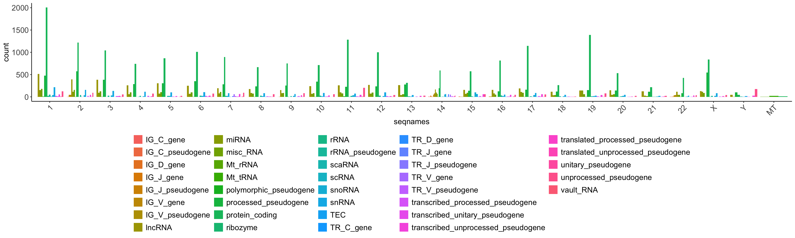
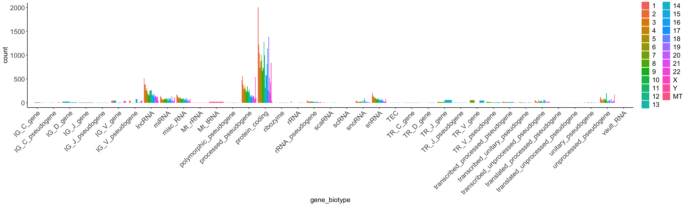
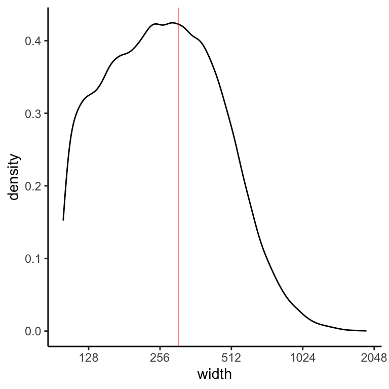

if (!require("BiocManager"))
install.packages("BiocManager")
if (!require("GenomicRanges"))
BiocManager::install("GenomicRanges")GRanges
GRanges
The GenomicRanges package serves as the foundation for representing genomic locations. We will use the operations implemented in the GenomicRanges and related packages to run jobs typically performed in the context of a high throughput sequence analysis.
Objectives
- Introduction to GRanges class
- Explore main functions for handling GRanges objects
- Work with GRanges and dplyr
- Import and inspect a GTF file
- Define TSS genomic positions
- Intersect TSS windows with TF-bound genomic intervals
Install and load
library(GenomicRanges)
library(ggplot2)
library(dplyr)
library(curl)
#library(plyranges)The Genomic Range Object
The GRanges class defines a set of genomic ranges, each characterized by a single start and end position on the genome. It is commonly used to store the locations of genomic features such as contiguous binding sites, transcripts, and exons. GRanges objects can be created using the GRanges constructor function. For instance:
gr <- GRanges(
seqnames = Rle(c("chr1", "chr2", "chr1", "chr3"), c(1, 3, 2, 4)),
ranges = IRanges(start = 101:110, end = 111:120, names = head(letters, 10)),
strand = Rle(strand(c("-", "+", "*", "+", "-")), c(1, 2, 2, 3, 2)), # strand --> without double quotes
score = 1:10,
GC = seq(1, 0, length=10))
grGRanges object with 10 ranges and 2 metadata columns:
seqnames ranges strand | score GC
<Rle> <IRanges> <Rle> | <integer> <numeric>
a chr1 101-111 - | 1 1.000000
b chr2 102-112 + | 2 0.888889
c chr2 103-113 + | 3 0.777778
d chr2 104-114 * | 4 0.666667
e chr1 105-115 * | 5 0.555556
f chr1 106-116 + | 6 0.444444
g chr3 107-117 + | 7 0.333333
h chr3 108-118 + | 8 0.222222
i chr3 109-119 - | 9 0.111111
j chr3 110-120 - | 10 0.000000
-------
seqinfo: 3 sequences from an unspecified genome; no seqlengthsThe output of the GRanges displays information in two sections separated by a | symbol. Genomic coordinates (including seqnames, ranges, strand, names) appear on the left-hand side, while metadata columns (annotations) are shown on the right. In the above example, the metadata includes score and GC content, although the metadata section of a GRanges object can store a wide variety of information.
class(gr)[1] "GRanges"
attr(,"package")
[1] "GenomicRanges"length(gr)[1] 10An Rle (run-length-encoded) vector is a specific representation of a vector. For more information have a look at: https://kasperdanielhansen.github.io/genbioconductor/html/GenomicRanges_Rle.html. The IRanges function defines interval ranges.
Extract idividual components of the GR object
The genomic coordinate components of a GRanges object can be accessed using the seqnames, names, and strand functions.
# Extract chromosome names
seqnames(gr)factor-Rle of length 10 with 4 runs
Lengths: 1 3 2 4
Values : chr1 chr2 chr1 chr3
Levels(3): chr1 chr2 chr3# Extract the strand
strand(gr)factor-Rle of length 10 with 5 runs
Lengths: 1 2 2 3 2
Values : - + * + -
Levels(3): + - *# Extract the names
names(gr) [1] "a" "b" "c" "d" "e" "f" "g" "h" "i" "j"# Extract the start position
start(gr) [1] 101 102 103 104 105 106 107 108 109 110Basic interval operations
The genomic ranges can be extracted without corresponding metadata with ranges or granges
ranges(gr)IRanges object with 10 ranges and 0 metadata columns:
start end width
<integer> <integer> <integer>
a 101 111 11
b 102 112 11
c 103 113 11
d 104 114 11
e 105 115 11
f 106 116 11
g 107 117 11
h 108 118 11
i 109 119 11
j 110 120 11# Extract genomic ranges without annotations
granges(gr)GRanges object with 10 ranges and 0 metadata columns:
seqnames ranges strand
<Rle> <IRanges> <Rle>
a chr1 101-111 -
b chr2 102-112 +
c chr2 103-113 +
d chr2 104-114 *
e chr1 105-115 *
f chr1 106-116 +
g chr3 107-117 +
h chr3 108-118 +
i chr3 109-119 -
j chr3 110-120 -
-------
seqinfo: 3 sequences from an unspecified genome; no seqlengthsWhat is the length of the genomic regions? One might want to plot the peak length distribution for called peaks. GRanges can provide this in one function.
# Extract the width
width(gr) [1] 11 11 11 11 11 11 11 11 11 11Extracting annotations
# Extract annotations
mcols(gr)DataFrame with 10 rows and 2 columns
score GC
<integer> <numeric>
a 1 1.000000
b 2 0.888889
c 3 0.777778
d 4 0.666667
e 5 0.555556
f 6 0.444444
g 7 0.333333
h 8 0.222222
i 9 0.111111
j 10 0.000000mcols(gr)$GC [1] 1.0000000 0.8888889 0.7777778 0.6666667 0.5555556 0.4444444 0.3333333
[8] 0.2222222 0.1111111 0.0000000# Reverse GRanges
#rev(gr)Subset GRanges objects
Standard subsetting methods similar to R vectors and lists can be used to subset GRanges objects.
Subset specific intervals
gr[c('a','d')]GRanges object with 2 ranges and 2 metadata columns:
seqnames ranges strand | score GC
<Rle> <IRanges> <Rle> | <integer> <numeric>
a chr1 101-111 - | 1 1.000000
d chr2 104-114 * | 4 0.666667
-------
seqinfo: 3 sequences from an unspecified genome; no seqlengthsgr[2:3]GRanges object with 2 ranges and 2 metadata columns:
seqnames ranges strand | score GC
<Rle> <IRanges> <Rle> | <integer> <numeric>
b chr2 102-112 + | 2 0.888889
c chr2 103-113 + | 3 0.777778
-------
seqinfo: 3 sequences from an unspecified genome; no seqlengthsSelect and filter specific metadata
gr[2:3, c('GC','score')]GRanges object with 2 ranges and 2 metadata columns:
seqnames ranges strand | GC score
<Rle> <IRanges> <Rle> | <numeric> <integer>
b chr2 102-112 + | 0.888889 2
c chr2 103-113 + | 0.777778 3
-------
seqinfo: 3 sequences from an unspecified genome; no seqlengthsgr[gr$GC>0.7]GRanges object with 3 ranges and 2 metadata columns:
seqnames ranges strand | score GC
<Rle> <IRanges> <Rle> | <integer> <numeric>
a chr1 101-111 - | 1 1.000000
b chr2 102-112 + | 2 0.888889
c chr2 103-113 + | 3 0.777778
-------
seqinfo: 3 sequences from an unspecified genome; no seqlengthsplyranges
Can we use dplyr functions with GRanges objects?
gr %>% select(GC)In general, dplyr functions do not directly apply on a GRanges object, because GRanges is a special Bioconductor object and not a standard data frame or tibble. One option is to convert a GRanges object to a tibble or data.frame using as.data.frame() or as_tibble(), and then use dplyr functions like select(), filter(), mutate(), etc. Following manipulation, it can be converted back to a GRanges object if needed.
makeGRangesFromDataFrame uses as input a data-frame-like object and automatically finds the columns that describe genomic ranges. It then returns them as a GRanges object. A number of arguments control the behaviour of the function and modify the output GRange object.
What is the purpose of the keep.extra.columns option?
# Convert to a dataframe, filter with dplyr, and re-convert to a GRanges object
gr_df <- as.data.frame(gr)
gr_df <- gr_df %>% filter(GC>0.7) %>% select(-strand)
# Convert data.frame to GRanges object
makeGRangesFromDataFrame(gr_df, keep.extra.columns = TRUE)GRanges object with 3 ranges and 2 metadata columns:
seqnames ranges strand | score GC
<Rle> <IRanges> <Rle> | <integer> <numeric>
a chr1 101-111 * | 1 1.000000
b chr2 102-112 * | 2 0.888889
c chr2 103-113 * | 3 0.777778
-------
seqinfo: 3 sequences from an unspecified genome; no seqlengthsAlternatively, one can use plyranges, a Bioconductor package that extends dplyr-style syntax directly to GRanges objects.
#BiocManager::install("plyranges")library(plyranges)
Attaching package: 'plyranges'The following objects are masked from 'package:dplyr':
between, n, n_distinctThe following object is masked from 'package:IRanges':
sliceThe following object is masked from 'package:stats':
filtergr %>% filter(GC>0.7)GRanges object with 3 ranges and 2 metadata columns:
seqnames ranges strand | score GC
<Rle> <IRanges> <Rle> | <integer> <numeric>
a chr1 101-111 - | 1 1.000000
b chr2 102-112 + | 2 0.888889
c chr2 103-113 + | 3 0.777778
-------
seqinfo: 3 sequences from an unspecified genome; no seqlengths# Convert GRanges object to a dataframe
gr %>% as.data.frame() %>% head() seqnames start end width strand score GC
a chr1 101 111 11 - 1 1.0000000
b chr2 102 112 11 + 2 0.8888889
c chr2 103 113 11 + 3 0.7777778
d chr2 104 114 11 * 4 0.6666667
e chr1 105 115 11 * 5 0.5555556
f chr1 106 116 11 + 6 0.4444444Not all
dplyrfunctions are compatible with GRanges object. In some cases you need to convert to a tibble and then back to a GR object.
Import GTF for Homo sapiens
GRanges provides a flexible framework for importing, inspecting, and processing GTF (Gene Transfer Format) files. Here, we will retrieve a GTF file containing genomic annotations for Homo sapiens from the Ensembl FTP server. We will use the import function from the rtracklayer package to fetch the gtf file.
# Import library
library(rtracklayer)# Define the FTP URL
ftp_url = "ftp://ftp.ensembl.org/pub/release-106/gtf/homo_sapiens/Homo_sapiens.GRCh38.106.chr.gtf.gz"# Import gtf as GRange object
options(timeout = 1000)
gtf <- rtracklayer::import(ftp_url)# View GRanges
gtf %>% head()GRanges object with 6 ranges and 22 metadata columns:
seqnames ranges strand | source type score
<Rle> <IRanges> <Rle> | <factor> <factor> <numeric>
[1] 1 1211340-1214153 - | ensembl_havana gene NA
[2] 1 1211340-1214153 - | ensembl_havana transcript NA
[3] 1 1213983-1214153 - | ensembl_havana exon NA
[4] 1 1213983-1214127 - | ensembl_havana CDS NA
[5] 1 1214125-1214127 - | ensembl_havana start_codon NA
[6] 1 1213663-1213785 - | ensembl_havana exon NA
phase gene_id gene_version gene_name gene_source
<integer> <character> <character> <character> <character>
[1] <NA> ENSG00000186827 11 TNFRSF4 ensembl_havana
[2] <NA> ENSG00000186827 11 TNFRSF4 ensembl_havana
[3] <NA> ENSG00000186827 11 TNFRSF4 ensembl_havana
[4] 0 ENSG00000186827 11 TNFRSF4 ensembl_havana
[5] 0 ENSG00000186827 11 TNFRSF4 ensembl_havana
[6] <NA> ENSG00000186827 11 TNFRSF4 ensembl_havana
gene_biotype transcript_id transcript_version transcript_name
<character> <character> <character> <character>
[1] protein_coding <NA> <NA> <NA>
[2] protein_coding ENST00000379236 4 TNFRSF4-201
[3] protein_coding ENST00000379236 4 TNFRSF4-201
[4] protein_coding ENST00000379236 4 TNFRSF4-201
[5] protein_coding ENST00000379236 4 TNFRSF4-201
[6] protein_coding ENST00000379236 4 TNFRSF4-201
transcript_source transcript_biotype tag ccds_id
<character> <character> <character> <character>
[1] <NA> <NA> <NA> <NA>
[2] ensembl_havana protein_coding basic CCDS11
[3] ensembl_havana protein_coding basic CCDS11
[4] ensembl_havana protein_coding basic CCDS11
[5] ensembl_havana protein_coding basic CCDS11
[6] ensembl_havana protein_coding basic CCDS11
transcript_support_level exon_number exon_id exon_version
<character> <character> <character> <character>
[1] <NA> <NA> <NA> <NA>
[2] 1 (assigned to previ.. <NA> <NA> <NA>
[3] 1 (assigned to previ.. 1 ENSE00001832731 2
[4] 1 (assigned to previ.. 1 <NA> <NA>
[5] 1 (assigned to previ.. 1 <NA> <NA>
[6] 1 (assigned to previ.. 2 ENSE00001333068 1
protein_id protein_version
<character> <character>
[1] <NA> <NA>
[2] <NA> <NA>
[3] <NA> <NA>
[4] ENSP00000368538 3
[5] <NA> <NA>
[6] <NA> <NA>
-------
seqinfo: 25 sequences from an unspecified genome; no seqlengthsInspect the GTF file
Check the metadata information contained in the GTF file
# Check the metadata information
mcols(gtf) %>% names() [1] "source" "type"
[3] "score" "phase"
[5] "gene_id" "gene_version"
[7] "gene_name" "gene_source"
[9] "gene_biotype" "transcript_id"
[11] "transcript_version" "transcript_name"
[13] "transcript_source" "transcript_biotype"
[15] "tag" "ccds_id"
[17] "transcript_support_level" "exon_number"
[19] "exon_id" "exon_version"
[21] "protein_id" "protein_version" Notice that GRanges was able to properly tabulate the information contained in the 9th column of the GTF file. This wouldn’t be as efficient using the read.table() function.
What are the different type of intervals?
# Inspect the levels in the `type` column
#gtf %>% count(type)
gtf %>%
group_by(type) %>%
summarise(n = n())DataFrame with 9 rows and 2 columns
type n
<factor> <integer>
1 gene 61498
2 transcript 246452
3 exon 1572337
4 CDS 851032
5 start_codon 95255
6 stop_codon 88853
7 five_prime_utr 168139
8 three_prime_utr 195144
9 Selenocysteine 119How many unique protein-coding genes there are in the gtf?
# Using dplyr with additionally removing duplicate genes
pcg <- gtf %>%
as_tibble() %>%
filter(type=='gene' & gene_biotype=='protein_coding' & !is.na(gene_name)) %>%
distinct(gene_name, .keep_all = TRUE) %>%
makeGRangesFromDataFrame(keep.extra.columns = TRUE)
length(pcg)[1] 19355class(pcg)[1] "GRanges"
attr(,"package")
[1] "GenomicRanges"Drawing plots of metadata information
Tabulate the number of genes per chromosome
seqnames(pcg) %>% table().
1 2 3 4 5 6 7 8 9 10 11 12 13 14 15 16
2005 1220 1043 741 865 1011 894 668 750 713 1283 999 314 591 575 816
17 18 19 20 21 22 X Y MT
1146 263 1389 529 215 427 839 46 13 Plot the number of unique protein-coding genes per chromosome. In this case, we do not filter for protein-coding genes.
# PLot by chromosome
options(repr.plot.width=28, repr.plot.height=4)
pcg %>%
as.data.frame() %>%
#group_by(seqnames, gene_biotype) %>%
summarize(.by=c(seqnames, gene_biotype), count = n()) %>%
ggplot(aes(x = seqnames, y = count, fill=gene_biotype)) +
geom_bar(stat = 'identity', position = 'dodge') +
theme_classic() +
theme(axis.title=element_text(size=14), axis.text = element_text(size=14),
legend.title=element_blank(), legend.text = element_text(size=14),
axis.text.x = element_text(angle = 45, vjust=1, hjust = 1))
Plot the different genes types per chromosome
# PLot by chromosome
gtf %>%
as.data.frame() %>%
filter(type=='gene' & !is.na(gene_name)) %>%
group_by(seqnames, gene_biotype) %>%
summarize(count = n()) %>%
ggplot(aes(x = seqnames, y = count, fill=gene_biotype)) +
geom_bar(stat = 'identity', position = 'dodge') +
theme_classic() +
theme(axis.title=element_text(size=14), axis.text = element_text(size=14),
legend.title=element_blank(), legend.text = element_text(size=14), legend.position = 'bottom',
axis.text.x = element_text(angle = 45, vjust=1, hjust = 1))`summarise()` has grouped output by 'seqnames'. You can override using the
`.groups` argument.
Plot the distribution across chromosomes per each gene type. Which gene type is the most abundant?
options(repr.plot.width=20, repr.plot.height=8)
gtf %>%
as.data.frame() %>%
filter(type=='gene' & !is.na(gene_name)) %>%
group_by(seqnames, gene_biotype) %>%
summarize(count = n()) %>%
ggplot(aes(x = gene_biotype, y = count, fill=seqnames)) +
geom_bar(stat = 'identity', position = 'dodge') +
theme_classic() +
theme(axis.title=element_text(size=14), axis.text = element_text(size=14),
legend.title=element_blank(), legend.text = element_text(size=14),
axis.text.x = element_text(angle = 45, vjust=1, hjust = 1))`summarise()` has grouped output by 'seqnames'. You can override using the
`.groups` argument.
Defining the TSS of transcripts
In genomic analyses, we often need to generate a file containing transcription start site (TSS) positions or windows surrounding the TSS. This regions are important for defining promoter areas, where the regulation of gene expression primarily occurs. TSS-centered regions are also crucial for performing downstream analyses, e.g. motif discovery for transcription factors, or assessing the overlap with accessible regions (derived from ATAC-seq data) or regions of histone mark occupancy and transcription factor binding (ChIP-seq data).
GTF files are the primary source from where we can extract TSS positions. Here, we will identify the TSS of transcripts and create a window around them that spans 1000 bases upstream and 500 bases downstream of the TSS.
First we will retrieve all transcripts. We will filter for ensembl_havana annotated transcripts. HAVANA stands for Human And Vertebrate Analysis and Annotation. These are manually curated annotations (Wellcome Sanger Institute) integrated with the automatic annotation of Ensembl.
tx <- gtf %>%
as_tibble() %>%
filter(type == "transcript" & source == "ensembl_havana" & !is.na(transcript_name)) %>%
#distinct(transcript_name, .keep_all = TRUE) %>%
makeGRangesFromDataFrame(, keep.extra.columns = TRUE)
length(tx)[1] 26624head(tx,2)GRanges object with 2 ranges and 22 metadata columns:
seqnames ranges strand | source type score
<Rle> <IRanges> <Rle> | <factor> <factor> <numeric>
[1] 1 1211340-1214153 - | ensembl_havana transcript NA
[2] 1 1203508-1206571 - | ensembl_havana transcript NA
phase gene_id gene_version gene_name gene_source
<integer> <character> <character> <character> <character>
[1] <NA> ENSG00000186827 11 TNFRSF4 ensembl_havana
[2] <NA> ENSG00000186891 14 TNFRSF18 ensembl_havana
gene_biotype transcript_id transcript_version transcript_name
<character> <character> <character> <character>
[1] protein_coding ENST00000379236 4 TNFRSF4-201
[2] protein_coding ENST00000328596 10 TNFRSF18-201
transcript_source transcript_biotype tag ccds_id
<character> <character> <character> <character>
[1] ensembl_havana protein_coding basic CCDS11
[2] ensembl_havana protein_coding basic CCDS9
transcript_support_level exon_number exon_id exon_version protein_id
<character> <character> <character> <character> <character>
[1] 1 (assigned to previ.. <NA> <NA> <NA> <NA>
[2] 1 <NA> <NA> <NA> <NA>
protein_version
<character>
[1] <NA>
[2] <NA>
-------
seqinfo: 25 sequences from an unspecified genome; no seqlengthsTo create TSS genomic coordinates, we will define TSS as start position for the ‘+’ strand and end position for the ‘-’ strand. Here, we use the ifelse() function to define the position: if strand is positive, then start equals to tx start position, otherwise (when strand is not positive) start equals to tx end position.
# Define TSS as start position for '+' strand and end position for '-' strand
tss <- GRanges(
seqnames = seqnames(tx),
ranges = IRanges(
start = ifelse(strand(tx) == "+", start(tx) , end(tx)),
end = ifelse(strand(tx) == "+", start(tx), end(tx))
),
strand = strand(tx),
gene_name = tx$gene_name,
gene_id = tx$gene_id
)
length(tss)[1] 26624head(tss, 4)GRanges object with 4 ranges and 2 metadata columns:
seqnames ranges strand | gene_name gene_id
<Rle> <IRanges> <Rle> | <character> <character>
[1] 1 1214153 - | TNFRSF4 ENSG00000186827
[2] 1 1206571 - | TNFRSF18 ENSG00000186891
[3] 1 1206592 - | TNFRSF18 ENSG00000186891
[4] 1 1471765 + | ATAD3B ENSG00000160072
-------
seqinfo: 25 sequences from an unspecified genome; no seqlengthsExport the file with TSS genomic positions in BED format.
export(tss, "../results/TSS.bed", format = "BED")GRanges has dedicated method for doing the same job, called resize(). Let’s use the resize method to define the TSS
# Alternative way to define TSS with the resize method
tss.2 <- gtf %>% .[mcols(.)$type=='transcript'] %>%
.[mcols(.)$source=='ensembl_havana' & !is.na(mcols(.)$transcript_name)] %>%
resize(., 1) %>%
.[,c('gene_name','gene_id')]
export(tss.2, "../results/TSS_v2.bed", format = "BED")
length(tss.2)[1] 26624head(tss.2)GRanges object with 6 ranges and 2 metadata columns:
seqnames ranges strand | gene_name gene_id
<Rle> <IRanges> <Rle> | <character> <character>
[1] 1 1214153 - | TNFRSF4 ENSG00000186827
[2] 1 1206571 - | TNFRSF18 ENSG00000186891
[3] 1 1206592 - | TNFRSF18 ENSG00000186891
[4] 1 1471765 + | ATAD3B ENSG00000160072
[5] 1 3069203 + | PRDM16 ENSG00000142611
[6] 1 1307930 - | ACAP3 ENSG00000131584
-------
seqinfo: 25 sequences from an unspecified genome; no seqlengthsVerify that we got the same results
identical(tss, tss.2)[1] TRUETry to define a window spanning the TSS 1000 bases upstream and 500 bases downstream. The upstream and downstream arguments define the number of nucleotides in the 5’ and 3’ direction, respectively.
# Define a 100 bp window around the TSS
tss_window <- GRanges(
seqnames = seqnames(tss),
ranges = IRanges(
start = pmax(start(tss) - 1000, 1), # Ensures start position is >= 1. Returns the maximum value.
end = end(tss) + 500
),
#strand = strand(tss)
gene_name = tx$gene_name,
gene_id = tx$gene_id
)
# View result
head(tss_window, 4)GRanges object with 4 ranges and 2 metadata columns:
seqnames ranges strand | gene_name gene_id
<Rle> <IRanges> <Rle> | <character> <character>
[1] 1 1213153-1214653 * | TNFRSF4 ENSG00000186827
[2] 1 1205571-1207071 * | TNFRSF18 ENSG00000186891
[3] 1 1205592-1207092 * | TNFRSF18 ENSG00000186891
[4] 1 1470765-1472265 * | ATAD3B ENSG00000160072
-------
seqinfo: 25 sequences from an unspecified genome; no seqlengthsWe can use the intra range transformation promoter() function of GRanges to do the same job. The output range is defined as
(start(x) - upstream) to (start(x) + downstream - 1)
for ranges on the + or * strand, and as
(end(x) - downstream + 1) to (end(x) + upstream)
for ranges on the - strand
tss_window <- promoters(tx, upstream=1000, downstream=500) %>% .[,c('gene_name')]
#export(tss_window, "../results/TSS_window.bed", format='BED')
tss_window %>% head(4)GRanges object with 4 ranges and 1 metadata column:
seqnames ranges strand | gene_name
<Rle> <IRanges> <Rle> | <character>
[1] 1 1213654-1215153 - | TNFRSF4
[2] 1 1206072-1207571 - | TNFRSF18
[3] 1 1206093-1207592 - | TNFRSF18
[4] 1 1470765-1472264 + | ATAD3B
-------
seqinfo: 25 sequences from an unspecified genome; no seqlengthsIntersect with TF-bound regions
One common question in the analysis of genomic intervals is what are the genes regulated by various trascription factors, or other members of the transcriptional machinery. In that case, we might want to compare the TSS intervals of genes to regions bound by a transcription factor.
We will determine the overlap between genomic regions bound by BATF, a pioneer transcription factor, and promoter intervals to identify genes potentially regulated by BATF. The BATF genomic regions derive from an experiment where naive CD4+ T cells isolated from human umbilical cord blood were in vitro polarized to Th17-fate for 72h and further subjected to BATF ChIP analysis. Genome-wide ChIP-seq reads were aligned to the hg38 genome assembly. The data is deposited in the public repository Gene Expression Omnibus (GEO) with accession id GSE174810. The latter is a SubSeries which is is part of SuperSeries GSE176065.
[GEO]https://www.ncbi.nlm.nih.gov/geo/
GSE174810: Genome-wide binding sites of FOSL1, FOSL2 and BATF in human Th17 cells [ChIP-seq]

Retrieve data from GEO
We will fetch the supplementary files with the GEOquery function getGEOSuppFiles(). This will download the files in a directory named according to the GEO accession id. We can then untar/unzip the file and import the files we need. We will try different ways to achieve this:
getGEO() is the main user-level function in the GEOquery package. For more information, check out the package vignette GEOquery.
library(GEOquery)Loading required package: BiobaseWelcome to Bioconductor
Vignettes contain introductory material; view with
'browseVignettes()'. To cite Bioconductor, see
'citation("Biobase")', and for packages 'citation("pkgname")'.Setting options('download.file.method.GEOquery'='auto')Setting options('GEOquery.inmemory.gpl'=FALSE)- Download supplementary files
Check the path to the current directory in order to understand where the file is downloaded.
getwd()Download data from a GEO
# Download data from a GEO and list files
#setwd('../')
getGEOSuppFiles("GSE174810")Check that the tar file has been downloaded
list.files('../GSE174810/')[1] "BATF_peaks.narrowPeak.gz" "GSE174810_RAW"
[3] "GSE174810_RAW.tar" Check the list of files in the tar
untar("GSE174810/GSE174810_RAW.tar", list = TRUE)To untar directly from R we can use the built-in untar() function.
untar("../GSE174810/GSE174810_RAW.tar", exdir = "../GSE174810/GSE174810_RAW")List the supplementary files
list.files('../GSE174810/GSE174810_RAW/')[1] "GSM5328649_BATF_R1_peaks.narrowPeak.gz"
[2] "GSM5328651_BATF_R3_peaks.narrowPeak.gz"
[3] "GSM5328653_FOSL1_C-12_R1_peaks.narrowPeak.gz"
[4] "GSM5328655_FOSL1_C-12_R2_peaks.narrowPeak.gz"
[5] "GSM5328657_FOSL2_R1_peaks.narrowPeak.gz"
[6] "GSM5328659_FOSL2_R2_peaks.narrowPeak.gz" Import the file of interest, e.g. BATF_R1_peaks, by providing the connection con from which data is loaded.
library(rtracklayer)
# R.utils::gunzip("../GSE174810/GSE174810_RAW/GSM5328649_BATF_R1_peaks.narrowPeak.gz",
# overwrite = TRUE)
file_path <- "../GSE174810/GSE174810_RAW/GSM5328649_BATF_R1_peaks.narrowPeak.gz"
#Does the file exist?
file.exists(file_path)[1] TRUEoptions(timeout = 1000)
batf <- import(con=file_path, format = "narrowPeak")
#dim(bed)
batf %>% head(2)GRanges object with 2 ranges and 6 metadata columns:
seqnames ranges strand | name score signalValue
<Rle> <IRanges> <Rle> | <character> <numeric> <numeric>
[1] chr1 992366-992706 * | BATF_R1_peak_1 491 10.86899
[2] chr1 1013033-1013271 * | BATF_R1_peak_2 81 5.07551
pValue qValue peak
<numeric> <numeric> <integer>
[1] 52.8283 49.18042 180
[2] 10.9246 8.12685 170
-------
seqinfo: 33 sequences from an unspecified genome; no seqlengths- Retrieve the file from GEO providing a URL.
# Define URL
batf_url <- "https://ftp.ncbi.nlm.nih.gov/geo/samples/GSM5328nnn/GSM5328649/suppl/GSM5328649%5FBATF%5FR1%5Fpeaks%2EnarrowPeak%2Egz"# error when rtracklayer::import is used directly on a remote .gz file
# Download first
destfile <- "../GSE174810/BATF_peaks.narrowPeak.gz"
download.file(batf_url, destfile = destfile)
# Then import it
batf <- import(con = destfile, format = "narrowPeak")
batf %>% head()GRanges object with 6 ranges and 6 metadata columns:
seqnames ranges strand | name score signalValue
<Rle> <IRanges> <Rle> | <character> <numeric> <numeric>
[1] chr1 992366-992706 * | BATF_R1_peak_1 491 10.86899
[2] chr1 1013033-1013271 * | BATF_R1_peak_2 81 5.07551
[3] chr1 1064103-1064463 * | BATF_R1_peak_3 515 16.40878
[4] chr1 1098903-1099465 * | BATF_R1_peak_4 39 3.95218
[5] chr1 1208075-1208187 * | BATF_R1_peak_5 36 3.40441
[6] chr1 1217964-1218107 * | BATF_R1_peak_6 53 4.60597
pValue qValue peak
<numeric> <numeric> <integer>
[1] 52.82834 49.18042 180
[2] 10.92463 8.12685 170
[3] 55.24189 51.56105 189
[4] 6.55161 3.96331 393
[5] 6.17971 3.61470 59
[6] 8.03364 5.36412 56
-------
seqinfo: 33 sequences from an unspecified genome; no seqlengthsLet us check the length distribution of the intervals
mean(width(batf))[1] 306.8564#mcols(batf)$width <- width(batf)
batf %>%
as.data.frame() %>%
ggplot(aes(width)) +
geom_density() +
scale_x_continuous(trans='log2') +
geom_vline(xintercept=mean(width(batf)), color="red", linewidth=0.1 ) +
theme_classic()
# log2(width) returns log2 values on the x-axis, whilst scale_x_continuous() keeps the original values.Check the seqnames. You will notice that it contains seqnames not present in the tss_window()
seqnames(batf) %>% table().
chr1 chr10 chr11
4462 2267 1958
chr12 chr13 chr14
2522 1347 1634
chr15 chr16 chr17
1450 1144 1652
chr17_GL000205v2_random chr18 chr19
1 915 950
chr1_KI270706v1_random chr2 chr20
1 4209 949
chr21 chr22 chr22_KI270733v1_random
622 592 1
chr3 chr4 chr5
3375 2256 2491
chr6 chr7 chr8
3390 2148 2218
chr9 chrUn_GL000195v1 chrUn_GL000219v1
1625 1 2
chrUn_GL000220v1 chrUn_KI270438v1 chrUn_KI270466v1
1 1 1
chrUn_KI270467v1 chrX chrY
3 1047 8 From the UCSC site:
ChrN_random relates to sequence that is known to be in a particular chromosome, but could not be reliably ordered within the current sequence. ChrUn contains clone contigs that cannot be confidently placed on a specific chromosome. For the chrN_random and chrUn_random files, we essentially just concatenate together all the contigs into short pseudo-chromosomes. The coordinates of these are fairly arbitrary, although the relative positions of the coordinates are good within a contig. You can find more information about the data organization and format on the Data Organization and Format page.
To be able to intersect the two GRanges objects, the seqnames need to match. We need to modify the seqnames() of the batf GR object to match the levels of the tss_window GR object. To keep it simple, we will only change the seqnames for the autosomal chromosomes (1:22) plus chromosomes X and Y. It is also important to ensure that the genomic positions refer to the same genome assembly, in this case the human build 38!
# Seqnames of tss_window
seqnames(tss_window) %>% table().
1 2 3 4 5 6 7 8 9 10 11 12 13 14 15 16
2694 1761 1535 1031 1146 1365 1221 955 1004 968 1683 1470 419 842 834 1130
17 18 19 20 21 22 X Y MT
1592 403 1795 729 312 591 1071 73 0 Convert seqnames of BATF GR object
# Modify seqnames
#remove_seqnames <- "chrM|chrUn|chrEBV|random"
#batf <- batf[!(grepl(remove_seqnames, seqnames(batf)) ) ]
#batf <- keepSeqlevels(batf,
# seqlevelsInUse(batf),
# pruning.mode="coarse" #Remove the elements in x where the seqlevels to drop are in use.
# )
seqlevels(batf) <- sub("^chr", "", seqlevels(batf))seqnames(batf) %>% table().
1 10 11
4462 2267 1958
12 13 14
2522 1347 1634
15 16 17
1450 1144 1652
17_GL000205v2_random 18 19
1 915 950
1_KI270706v1_random 2 20
1 4209 949
21 22 22_KI270733v1_random
622 592 1
3 4 5
3375 2256 2491
6 7 8
3390 2148 2218
9 Un_GL000195v1 Un_GL000219v1
1625 1 2
Un_GL000220v1 Un_KI270438v1 Un_KI270466v1
1 1 1
Un_KI270467v1 X Y
3 1047 8 We will use the subsetByOverlaps method of GRanges to extract the elements in the query (e.g. TSS) that overlap at least one element in the subject (e.g. batf).
overlap <- subsetByOverlaps(tss_window, batf)Warning in .merge_two_Seqinfo_objects(x, y): Each of the 2 combined objects has sequence levels not in the other:
- in 'x': MT
- in 'y': 17_GL000205v2_random, 1_KI270706v1_random, 22_KI270733v1_random, Un_GL000195v1, Un_GL000219v1, Un_GL000220v1, Un_KI270438v1, Un_KI270466v1, Un_KI270467v1
Make sure to always combine/compare objects based on the same reference
genome (use suppressWarnings() to suppress this warning).overlapGRanges object with 3888 ranges and 1 metadata column:
seqnames ranges strand | gene_name
<Rle> <IRanges> <Rle> | <character>
[1] 1 12617711-12619210 - | DHRS3
[2] 1 8525440-8526939 - | RERE
[3] 1 8423167-8424666 - | RERE
[4] 1 11805191-11806690 + | CLCN6
[5] 1 2526097-2527596 - | PANK4
... ... ... ... . ...
[3884] 21 46634642-46636141 + | PRMT2
[3885] 21 46634653-46636152 + | PRMT2
[3886] 21 46634681-46636180 + | PRMT2
[3887] 21 33947926-33949425 + | LINC00649
[3888] 21 46285384-46286883 + | YBEY
-------
seqinfo: 25 sequences from an unspecified genome; no seqlengthsCan you tell what the warning is about?
Now we can retrieve the genes, whose promoter is bound by the BATF transcription factor.
genes <- overlap$gene_name %>% unique() %>% sort()
length(genes)[1] 2709head(genes)[1] "AAAS" "AAGAB" "AAK1" "AAMP" "AARS1" "ABCB1"Range-based transformations are grouped in 2 categories:
Intra range transformations (e.g. shift()) transform each range individually (and independently of the other ranges). They return an object parallel to the input object, that is, where the i-th range corresponds to the i-th range in the input. Those transformations are described in the intra-range-methods man page (see ?
intra-range-methods).Inter range transformations (e.g. reduce()) transform all the ranges together as a set to produce a new set of ranges. They return an object that is generally NOT parallel to the input object. Those transformations are described below.
Intra-range functions
Operate on each element of a GRanges object independently of the other ranges in the object.
For instance, the flank method allows you to generate regions flanking the existing ranges in a GRanges object in a strand dependent manner. To capture the 10 bases located upstream of these ranges:
g <- gr[1:3]
gGRanges object with 3 ranges and 2 metadata columns:
seqnames ranges strand | score GC
<Rle> <IRanges> <Rle> | <integer> <numeric>
a chr1 101-111 - | 1 1.000000
b chr2 102-112 + | 2 0.888889
c chr2 103-113 + | 3 0.777778
-------
seqinfo: 3 sequences from an unspecified genome; no seqlengthsflank(g, 10)GRanges object with 3 ranges and 2 metadata columns:
seqnames ranges strand | score GC
<Rle> <IRanges> <Rle> | <integer> <numeric>
a chr1 112-121 - | 1 1.000000
b chr2 92-101 + | 2 0.888889
c chr2 93-102 + | 3 0.777778
-------
seqinfo: 3 sequences from an unspecified genome; no seqlengthsTo include the downstream bases:
flank(g, 10, start=FALSE)GRanges object with 3 ranges and 2 metadata columns:
seqnames ranges strand | score GC
<Rle> <IRanges> <Rle> | <integer> <numeric>
a chr1 91-100 - | 1 1.000000
b chr2 113-122 + | 2 0.888889
c chr2 114-123 + | 3 0.777778
-------
seqinfo: 3 sequences from an unspecified genome; no seqlengthsWe can shift the ranges by a specific number of bases with shift. This is performed is a strand independent manner.
# Shift (same direction) both start and end by N bp
shift(g, -5)GRanges object with 3 ranges and 2 metadata columns:
seqnames ranges strand | score GC
<Rle> <IRanges> <Rle> | <integer> <numeric>
a chr1 96-106 - | 1 1.000000
b chr2 97-107 + | 2 0.888889
c chr2 98-108 + | 3 0.777778
-------
seqinfo: 3 sequences from an unspecified genome; no seqlengthsThe resize method will extend the ranges by a specified width from the start in a strand dependent manner.
# Rize width to N bp (from start)
resize(g, 5)GRanges object with 3 ranges and 2 metadata columns:
seqnames ranges strand | score GC
<Rle> <IRanges> <Rle> | <integer> <numeric>
a chr1 107-111 - | 1 1.000000
b chr2 102-106 + | 2 0.888889
c chr2 103-107 + | 3 0.777778
-------
seqinfo: 3 sequences from an unspecified genome; no seqlengthsInter-range functions
Transform all the ranges together as a set to produce a new set of ranges.
grGRanges object with 10 ranges and 2 metadata columns:
seqnames ranges strand | score GC
<Rle> <IRanges> <Rle> | <integer> <numeric>
a chr1 101-111 - | 1 1.000000
b chr2 102-112 + | 2 0.888889
c chr2 103-113 + | 3 0.777778
d chr2 104-114 * | 4 0.666667
e chr1 105-115 * | 5 0.555556
f chr1 106-116 + | 6 0.444444
g chr3 107-117 + | 7 0.333333
h chr3 108-118 + | 8 0.222222
i chr3 109-119 - | 9 0.111111
j chr3 110-120 - | 10 0.000000
-------
seqinfo: 3 sequences from an unspecified genome; no seqlengths- Align the ranges and merge overlapping ranges to produce a simplified set. It maintains information related to the strand.
#Merge overlapping intervals
reduce(gr) %>% arrange(start)GRanges object with 7 ranges and 0 metadata columns:
seqnames ranges strand
<Rle> <IRanges> <Rle>
[1] chr1 101-111 -
[2] chr2 102-113 +
[3] chr2 104-114 *
[4] chr1 105-115 *
[5] chr1 106-116 +
[6] chr3 107-118 +
[7] chr3 109-120 -
-------
seqinfo: 3 sequences from an unspecified genome; no seqlengths- Retrieve the gaps between the ranges
For example, it might be useful to retrieve all regions not bound by a transcription factor to interrogate further.
# Retrieve the gaps between the intervals
gaps(gr)GRanges object with 7 ranges and 0 metadata columns:
seqnames ranges strand
<Rle> <IRanges> <Rle>
[1] chr1 1-105 +
[2] chr1 1-100 -
[3] chr1 1-104 *
[4] chr2 1-101 +
[5] chr2 1-103 *
[6] chr3 1-106 +
[7] chr3 1-108 -
-------
seqinfo: 3 sequences from an unspecified genome; no seqlengths- A collection of non-overlapping ranges
Rather than merging intervals that overlap by 1 bp, it retrieves the complete overlapping plus non-overlapping regions.
# Returns the non-overlapping regions
disjoin(gr)GRanges object with 13 ranges and 0 metadata columns:
seqnames ranges strand
<Rle> <IRanges> <Rle>
[1] chr1 106-116 +
[2] chr1 101-111 -
[3] chr1 105-115 *
[4] chr2 102 +
[5] chr2 103-112 +
... ... ... ...
[9] chr3 108-117 +
[10] chr3 118 +
[11] chr3 109 -
[12] chr3 110-119 -
[13] chr3 120 -
-------
seqinfo: 3 sequences from an unspecified genome; no seqlengths- Quantify the degree of overlap for all the ranges in a GRanges object.
# Example GRanges object
g <- GRanges(seqnames = c("chr1", "chr1", "chr2"),
ranges = IRanges(start = c(1, 3, 4), end = c(4, 6, 7)),
strand = rep('+',3)
#strand = Rle(strand('+'),3)
#strand = Rle(rep('+',3))
)
# = Rle(strand(c("-", "+", "*", "+", "-")), c(1, 2, 2, 3, 2))
gGRanges object with 3 ranges and 0 metadata columns:
seqnames ranges strand
<Rle> <IRanges> <Rle>
[1] chr1 1-4 +
[2] chr1 3-6 +
[3] chr2 4-7 +
-------
seqinfo: 2 sequences from an unspecified genome; no seqlengthscoverage(g)RleList of length 2
$chr1
integer-Rle of length 6 with 3 runs
Lengths: 2 2 2
Values : 1 2 1
$chr2
integer-Rle of length 7 with 2 runs
Lengths: 3 4
Values : 0 1# Convert to dataframe
# Compute coverage (returns an RleList)
covg <- coverage(g)
# Convert coverage to a data frame
df_list <- lapply(names(covg), function(chr) {
data.frame(
seqnames = chr,
position = seq_along(covg[[chr]]), # Positions along the chromosome
coverage = as.vector(covg[[chr]]) # Convert Rle to numeric vector
)
})
# Combine into a single data frame
df <- do.call(rbind, df_list)
df seqnames position coverage
1 chr1 1 1
2 chr1 2 1
3 chr1 3 2
4 chr1 4 2
5 chr1 5 1
6 chr1 6 1
7 chr2 1 0
8 chr2 2 0
9 chr2 3 0
10 chr2 4 1
11 chr2 5 1
12 chr2 6 1
13 chr2 7 1Interval set operations for GRanges objects
Perform operations between two GRanges objects.
g <- gr[1:3]
g2 <- head(gr, n=2)
gGRanges object with 3 ranges and 2 metadata columns:
seqnames ranges strand | score GC
<Rle> <IRanges> <Rle> | <integer> <numeric>
a chr1 101-111 - | 1 1.000000
b chr2 102-112 + | 2 0.888889
c chr2 103-113 + | 3 0.777778
-------
seqinfo: 3 sequences from an unspecified genome; no seqlengthsg2GRanges object with 2 ranges and 2 metadata columns:
seqnames ranges strand | score GC
<Rle> <IRanges> <Rle> | <integer> <numeric>
a chr1 101-111 - | 1 1.000000
b chr2 102-112 + | 2 0.888889
-------
seqinfo: 3 sequences from an unspecified genome; no seqlengthsRetrieve the union of regions.
# Combined ranges
GenomicRanges::union(g, g2)GRanges object with 2 ranges and 0 metadata columns:
seqnames ranges strand
<Rle> <IRanges> <Rle>
[1] chr1 101-111 -
[2] chr2 102-113 +
-------
seqinfo: 3 sequences from an unspecified genome; no seqlengthsRetrieve overlapping regions.
# Overlapping regions
GenomicRanges::intersect(g, g2)GRanges object with 2 ranges and 0 metadata columns:
seqnames ranges strand
<Rle> <IRanges> <Rle>
[1] chr1 101-111 -
[2] chr2 102-112 +
-------
seqinfo: 3 sequences from an unspecified genome; no seqlengthsRetrieve the non-overlapping regions.
# Non overlapping regions
GenomicRanges::setdiff(g, g2)GRanges object with 1 range and 0 metadata columns:
seqnames ranges strand
<Rle> <IRanges> <Rle>
[1] chr2 113 +
-------
seqinfo: 3 sequences from an unspecified genome; no seqlengthsSplitting and combining GRanges objects
GRanges objects can be divided into groups using the split function. This produces a GRangesList object.
# Split using a factor that defines the grouping `rep(1:2, each=5)`. Use `time` instead of `each`.
sp <- split(gr, rep(1:2, each=5))
spGRangesList object of length 2:
$`1`
GRanges object with 5 ranges and 2 metadata columns:
seqnames ranges strand | score GC
<Rle> <IRanges> <Rle> | <integer> <numeric>
a chr1 101-111 - | 1 1.000000
b chr2 102-112 + | 2 0.888889
c chr2 103-113 + | 3 0.777778
d chr2 104-114 * | 4 0.666667
e chr1 105-115 * | 5 0.555556
-------
seqinfo: 3 sequences from an unspecified genome; no seqlengths
$`2`
GRanges object with 5 ranges and 2 metadata columns:
seqnames ranges strand | score GC
<Rle> <IRanges> <Rle> | <integer> <numeric>
f chr1 106-116 + | 6 0.444444
g chr3 107-117 + | 7 0.333333
h chr3 108-118 + | 8 0.222222
i chr3 109-119 - | 9 0.111111
j chr3 110-120 - | 10 0.000000
-------
seqinfo: 3 sequences from an unspecified genome; no seqlengthsSet the names of the two items in the list
# Name the two elements of the lists
names(sp) <- c('A','B')Check the length of each item
lengths(sp)A B
5 5 # Retrieve the first item in the list
#sp[[1]]
sp$AGRanges object with 5 ranges and 2 metadata columns:
seqnames ranges strand | score GC
<Rle> <IRanges> <Rle> | <integer> <numeric>
a chr1 101-111 - | 1 1.000000
b chr2 102-112 + | 2 0.888889
c chr2 103-113 + | 3 0.777778
d chr2 104-114 * | 4 0.666667
e chr1 105-115 * | 5 0.555556
-------
seqinfo: 3 sequences from an unspecified genome; no seqlengthsConcatenate the two lists
# Concatenate
c(sp[[1]], sp[[2]])GRanges object with 10 ranges and 2 metadata columns:
seqnames ranges strand | score GC
<Rle> <IRanges> <Rle> | <integer> <numeric>
a chr1 101-111 - | 1 1.000000
b chr2 102-112 + | 2 0.888889
c chr2 103-113 + | 3 0.777778
d chr2 104-114 * | 4 0.666667
e chr1 105-115 * | 5 0.555556
f chr1 106-116 + | 6 0.444444
g chr3 107-117 + | 7 0.333333
h chr3 108-118 + | 8 0.222222
i chr3 109-119 - | 9 0.111111
j chr3 110-120 - | 10 0.000000
-------
seqinfo: 3 sequences from an unspecified genome; no seqlengthsA useful and fast strategy is to unlist the GRangesList to a GRanges object, operate on the GRanges object, then relist the result.
# Unlist into a GRanges object
unlist(sp)GRanges object with 10 ranges and 2 metadata columns:
seqnames ranges strand | score GC
<Rle> <IRanges> <Rle> | <integer> <numeric>
A.a chr1 101-111 - | 1 1.000000
A.b chr2 102-112 + | 2 0.888889
A.c chr2 103-113 + | 3 0.777778
A.d chr2 104-114 * | 4 0.666667
A.e chr1 105-115 * | 5 0.555556
B.f chr1 106-116 + | 6 0.444444
B.g chr3 107-117 + | 7 0.333333
B.h chr3 108-118 + | 8 0.222222
B.i chr3 109-119 - | 9 0.111111
B.j chr3 110-120 - | 10 0.000000
-------
seqinfo: 3 sequences from an unspecified genome; no seqlengthsSplitting can be performed based on genomic coordinate information or metadata.
# Split by chromosome
singles <- split(gr, seqnames(gr))
names(singles)[1] "chr1" "chr2" "chr3"singlesGRangesList object of length 3:
$chr1
GRanges object with 3 ranges and 2 metadata columns:
seqnames ranges strand | score GC
<Rle> <IRanges> <Rle> | <integer> <numeric>
a chr1 101-111 - | 1 1.000000
e chr1 105-115 * | 5 0.555556
f chr1 106-116 + | 6 0.444444
-------
seqinfo: 3 sequences from an unspecified genome; no seqlengths
$chr2
GRanges object with 3 ranges and 2 metadata columns:
seqnames ranges strand | score GC
<Rle> <IRanges> <Rle> | <integer> <numeric>
b chr2 102-112 + | 2 0.888889
c chr2 103-113 + | 3 0.777778
d chr2 104-114 * | 4 0.666667
-------
seqinfo: 3 sequences from an unspecified genome; no seqlengths
$chr3
GRanges object with 4 ranges and 2 metadata columns:
seqnames ranges strand | score GC
<Rle> <IRanges> <Rle> | <integer> <numeric>
g chr3 107-117 + | 7 0.333333
h chr3 108-118 + | 8 0.222222
i chr3 109-119 - | 9 0.111111
j chr3 110-120 - | 10 0.000000
-------
seqinfo: 3 sequences from an unspecified genome; no seqlengths# Split based on metadata information
singles <- split(gr, mcols(gr)$score<4)
singlesGRangesList object of length 2:
$`FALSE`
GRanges object with 7 ranges and 2 metadata columns:
seqnames ranges strand | score GC
<Rle> <IRanges> <Rle> | <integer> <numeric>
d chr2 104-114 * | 4 0.666667
e chr1 105-115 * | 5 0.555556
f chr1 106-116 + | 6 0.444444
g chr3 107-117 + | 7 0.333333
h chr3 108-118 + | 8 0.222222
i chr3 109-119 - | 9 0.111111
j chr3 110-120 - | 10 0.000000
-------
seqinfo: 3 sequences from an unspecified genome; no seqlengths
$`TRUE`
GRanges object with 3 ranges and 2 metadata columns:
seqnames ranges strand | score GC
<Rle> <IRanges> <Rle> | <integer> <numeric>
a chr1 101-111 - | 1 1.000000
b chr2 102-112 + | 2 0.888889
c chr2 103-113 + | 3 0.777778
-------
seqinfo: 3 sequences from an unspecified genome; no seqlengthsHow would you split for start position less than 106 and GC more than 0.7
It is also possible to append an interval to the GRanges object
# Append to the ranges
g <- gr[1:3]
g <- append(g, singles[[1]][1])
gGRanges object with 4 ranges and 2 metadata columns:
seqnames ranges strand | score GC
<Rle> <IRanges> <Rle> | <integer> <numeric>
a chr1 101-111 - | 1 1.000000
b chr2 102-112 + | 2 0.888889
c chr2 103-113 + | 3 0.777778
d chr2 104-114 * | 4 0.666667
-------
seqinfo: 3 sequences from an unspecified genome; no seqlengthssingles[[1]][1]GRanges object with 1 range and 2 metadata columns:
seqnames ranges strand | score GC
<Rle> <IRanges> <Rle> | <integer> <numeric>
d chr2 104-114 * | 4 0.666667
-------
seqinfo: 3 sequences from an unspecified genome; no seqlengthsOr replace a genomic interval
# Replace a genomic interval
g[2] <- singles[[1]][2]
gGRanges object with 4 ranges and 2 metadata columns:
seqnames ranges strand | score GC
<Rle> <IRanges> <Rle> | <integer> <numeric>
a chr1 101-111 - | 1 1.000000
b chr1 105-115 * | 5 0.555556
c chr2 103-113 + | 3 0.777778
d chr2 104-114 * | 4 0.666667
-------
seqinfo: 3 sequences from an unspecified genome; no seqlengthssingles[[1]][2]GRanges object with 1 range and 2 metadata columns:
seqnames ranges strand | score GC
<Rle> <IRanges> <Rle> | <integer> <numeric>
e chr1 105-115 * | 5 0.555556
-------
seqinfo: 3 sequences from an unspecified genome; no seqlengthsReplace a value of a genomic interval
# Replace the strand in the second interval
mcols(g)$score[3] <- 10
strand(g[2]) <- '+'
gGRanges object with 4 ranges and 2 metadata columns:
seqnames ranges strand | score GC
<Rle> <IRanges> <Rle> | <numeric> <numeric>
a chr1 101-111 - | 1 1.000000
b chr1 105-115 + | 5 0.555556
c chr2 103-113 + | 10 0.777778
d chr2 104-114 * | 4 0.666667
-------
seqinfo: 3 sequences from an unspecified genome; no seqlengths# gr[IRanges(start=c(2,7), end=c(3,8))] # genomic intervals [2:3] and [7:8]: from 2nd to 3rd row and from 7th to 8th row
# gr %>% filter(start<107, start>102)#help("inter-range-methods", package = "GenomicRanges")
#?`inter-range-methods`GRanges offers parallel methods when two objects have matching structures, e.g. element 1 of one object corresponds to element 1 of the other. These methods, which start with “p” (for parallel), perform element-wise operations like unions. Both objects must have the same number of elements, with matching seqnames and strand throughout.
Online Resources and Databases for omics data
The section below briefly introduce you to the description and usage of some very useful online resources for ChIP-seq public data and also other omics data. Take a closer look to explore them, you might need them in the future in order to complement your future experiments!
Poor man’s guide to omics
When approaching a new problem, you might conceive multiple hypotheses that could instruct a wide variety of experimental approaches. However, you have neither the time, nor the money or the inclination to perform all of these experiments. Chances are, though, that somewhere in a server there is a dataset that can help you, be it a ChIP-seq dataset or any other omic. They may not give you an answer outright, but they’ll help you prune your hypotheses and only keep the ones that have some foundation. After all, while big data analysis often results in false positives, or at least positives that are contingent to a specific model, it is very useful to avoid pursuing roads for which no evidence is found in datasets.
This section aims to give you resources that you can employ to perform simple analyses that prevent you from wasting your time and allow you to focus on the experiments that matter.
Over the years, multiple consortia have assembled these datasets into curated collections, and new datasets are published with almost every new paper, neatly stored into various sites.
Here we provide a handful of key databases and characteristics of the main ones, as well as a list of other databases that may be useful for more specific questions.
ENCODE: the encyclopedia of DNA elements
The closest to the object of the workshop, over more than 20 years of activity the ENCODE consortium is the biggest effort in functional genomics in the world, assembling thousands of datasets. You can easily browse their portal by theme and find ready-made datasets that pertain to your field. Once you have your dataset (or datasets) of choice, you only have to browse it with the help of this workshop’s scripts or visualize it, for example with IGV.
GEO: The Gene Expression Omnibus
This portal is almost ubiquitous in publications - in fact, nearly all gene expression datasets used in publications, both bulk and single cell, are published on the GEO, a service handled by the NCBI. The GEO datasets can be accessed from papers, but also directly from the portal, and the neat thing is that they are generally well annotated so that you can understand how specific experiments were performed. They have specific files that tell you how the data was generated. This kind of information can be complementary to epigenome data, or can inform derivative work giving you invaluable insight into a model you want to adopt.
TCGA: The Cancer Genome Atlas
Among the biggest efforts in contemporary medical research, spearheaded by the NIH. The Cancer Genome Atlas has gathered transcriptomics, methylation, and chromatin accessibility data for an incredibly wide array of malignancies, and it keeps expanding with new cohorts of patients, curated by individual contributors. While it is a specific resource pertaining to oncology, its wealth of controls and diversity of malignancies makes it invaluable for anybody working on human biology - after all, most fundamental biology experiments are performed on cancer cell lines.
The Human Cell Atlas
Arguably the biggest ongoing sequencing project in the world, the Human Cell Atlas aims to fully leverage single cell transcriptomes to define every cell type in the human body. Currently hosting data for close to 60 million sequenced cells and still counting, this is the largest single-cell resolved gene expression resource currently available for non-diseased tissue. Allows downloads in formats that are ‘easily’ browsed - meaning you don’t have to do core processing yourself.
Additional links:
Roadmap consortium Generated tracks for multiple modifications, and produced ChromHMM to sort them out
EBI Bioimage Archive European resource for bioimages. Pretty unique and specific, rare type of datasets.
GTEX Tissue-specific genotype regulation - a complex database that can tell you whether your gene of interest works in the context you study.
Brown university collection Collection of resources, including some of those we showed above. Take a look when you need to find some new source of data!
NIH’s collection - even better than Brown’s! Includes even more well-categorized resources.